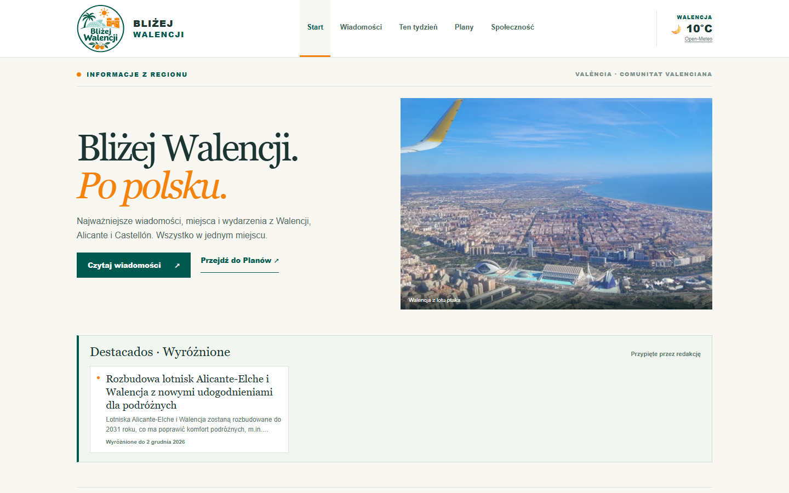
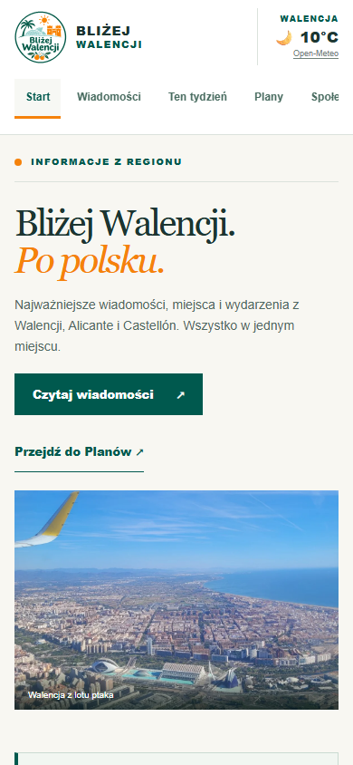

Odkrywaj region po swojemu
Aktualności, wydarzenia i pomysły na wolny czas. Treści testowe pokazują strukturę portalu, nie prawdziwe ogłoszenia.
Regionalny portal dla Polaków w Walencji. Zobacz, jak źródła, Django, workflow AI i redakcja łączą się w jeden system.

def build_graph():
graph = StateGraph(EditorialState)
graph.add_node('classify', classify_topic)
graph.add_node('source_check', evaluate_source)
graph.add_node('draft', make_draft)
graph.add_node('human_review', human_review)
graph.add_edge(START, 'classify')
graph.add_edge('classify', 'source_check')
graph.add_edge('source_check', 'draft')
graph.add_edge('draft', 'human_review')
graph.add_edge('human_review', END)
return graph
Zrzut wykonany 26 listopada 2026. https://blizejwalencji.es · Playwright Chromium · Tylko publiczna strona, bez dostępu do panelu redakcyjnego.
Przykładowy widok portalu — tak działa warstwa publikacji dla czytelnika.
Aktualności, wydarzenia i pomysły na wolny czas. Treści testowe pokazują strukturę portalu, nie prawdziwe ogłoszenia.
W prawdziwej architekturze źródła trafiają do Django, a szkice przechodzą kontrolę redaktora. Tutaj cały przepływ jest symulowany lokalnie.
Testuj filtrowanie, ranking i selekcję materiałów bez zewnętrznych zapytań.
Proces inspirowany LangGraph: wyszukiwanie → szkic → kontrola redaktora → zatwierdzenie → podgląd publikacji.
Żaden szkic nie przejdzie dalej bez jawnej decyzji redaktora.
Przygotuj szkic, aby zobaczyć, jak będzie wyglądał materiał na stronie.
Symulator zadań cyklicznych: statusy, walidacja i kolejki bez rzeczywistych cronów.
W produkcji harmonogram i obsługa błędów mogą działać niezależnie od żądań HTTP. Tutaj kliknięcia aktualizują tylko lokalny dziennik.
Ogólny schemat systemu bez udostępniania prywatnego kodu.
Modele treści, walidacja, moderacja i API.
Zmiany stanu i obowiązkowe zatwierdzenie redakcyjne.
Wyszukiwanie cykliczne, deduplikacja, ponawianie i logi.
def build_graph():
graph = StateGraph(EditorialState)
graph.add_node('classify', classify_topic)
graph.add_node('source_check', evaluate_source)
graph.add_node('draft', make_draft)
graph.add_node('human_review', human_review)
graph.add_edge(START, 'classify')
graph.add_edge('classify', 'source_check')
graph.add_edge('source_check', 'draft')
graph.add_edge('draft', 'human_review')
graph.add_edge('human_review', END)
return graphWybrany fragment rzeczywistego workflow LangGraph. Bez promptów, kluczy, szczegółów integracji i logiki publikowania.
Otwórz prawdziwy portal ↗